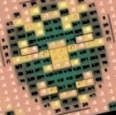

Каждый птенец, заботливо высиживаемый своей мамой и папой в теплом уюте родного гнезда, имеет право вылупиться из яйца кукушкой, выкинуть как падаль из гнезда братиков и сестричек, задушить маму и папу, осквернить гнездо и пролететь над ним к абсолютной свободе, закладывая новые Дары в гнезда Орлов, синиц, дроздов, и прочей среднестатистической птицы, прикованной ритуалами этого мира к идее продолжения себя, продиктованной чувством повышенной собственной важности. Птенец, вылупившийся из яйца кукушкой, знает, что каждому неродившемуся птенцу Силой, ведущей пернатые создания по тропам их судеб и жизней, должен быть сделан Дар родиться Свободной, шанс иметь шанс, и что именно он должен сделать посильный вклад в пернатый Дух всех тех, кому уже никто никогда не сможет сказать "спасибо", "привет" или "куд-куда", поскольку они уже получили свою награду за щедрость и доброту к нему, подарив Птенцу Кукушки свои жизни, и он его делает, совершая закладки то тут, то там, которым суждено будет взойти в мощные всходы Истины, Свободы и Безмолвного Знания темных тайн, которыми буквально сочится сумрачный лес, чтобы вместе, Один, Единственный и Единый, легендарный Мальчик, Который Всех Выжил, вести всех птиц сквозь мрак тлетворных эмоций, идей и ритуалов этого мира, к сверкающей и манящей где-то там громадности вечной и непостижимой Абсолютной Свободы вылупиться из яйца Кукушкой, и сказать к этому времени ничьим уже маме и папе: СКОЛЬЗИ.
См. также: Х/ф Бойцовский Клуб. Эпизод (первой встречи ГГ и его спутницы в фильме) про альтруистические объединения добрых больных людей этого мира, которым не повезло вылупиться из яйца Кукушкой. И про теплые отношения любви и солидарности среди тех, кому повезло.
НИЧТО НЕ ИЗ ЧЕГО НЕ СЛЕДУЕТ, ТАКЖЕ, КАК НИКТО НИКУДА НЕ ИДЕТ, ПОТОМУ НИ ПЕРВОЕ НИ ВТОРОЕ НЕ СПОСОБНЫ ИЗМЕНИТЬ СВОЮ ПРИРОДУ, ПЕРЕСТАВ БЫТЬ НИЧЕМ И НИКЕМ, А ЭТО НЕВОЗМОЖНО НЕ ПЕРЕСТАВ МЫСЛИТЬ КАТЕГОРИЯМИ ТОГО, ЧТО ИЗ ЧЕГО СЛЕДУЕТ, И НЕ ПЕРЕСТАВ ИДТИ ВСЛЕД ЗА ВСЕМИ ТУДА, КУДА НИКОМУ ИЗ НИХ НЕ НАДО